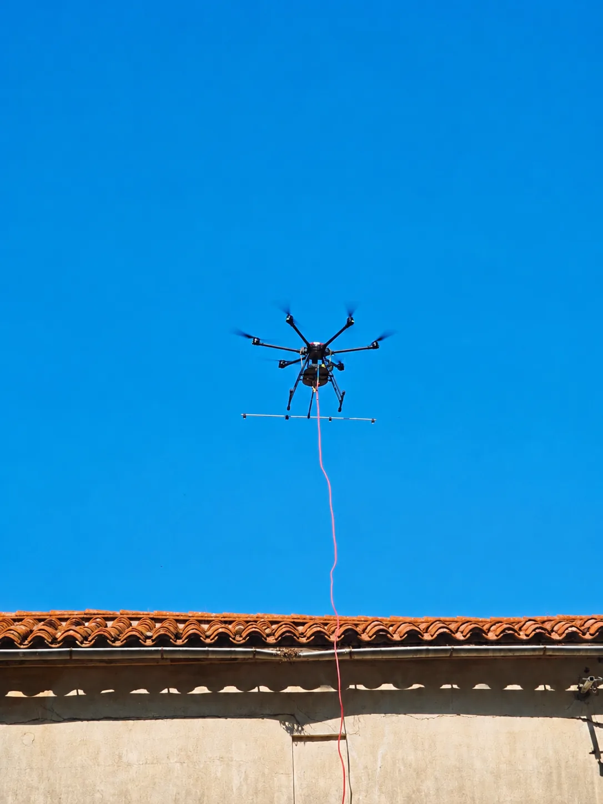
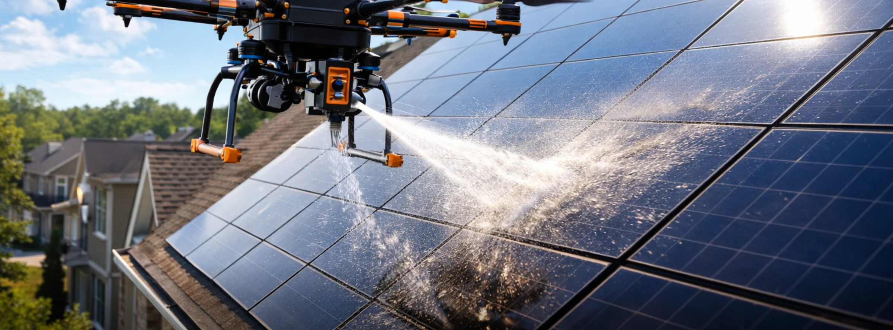
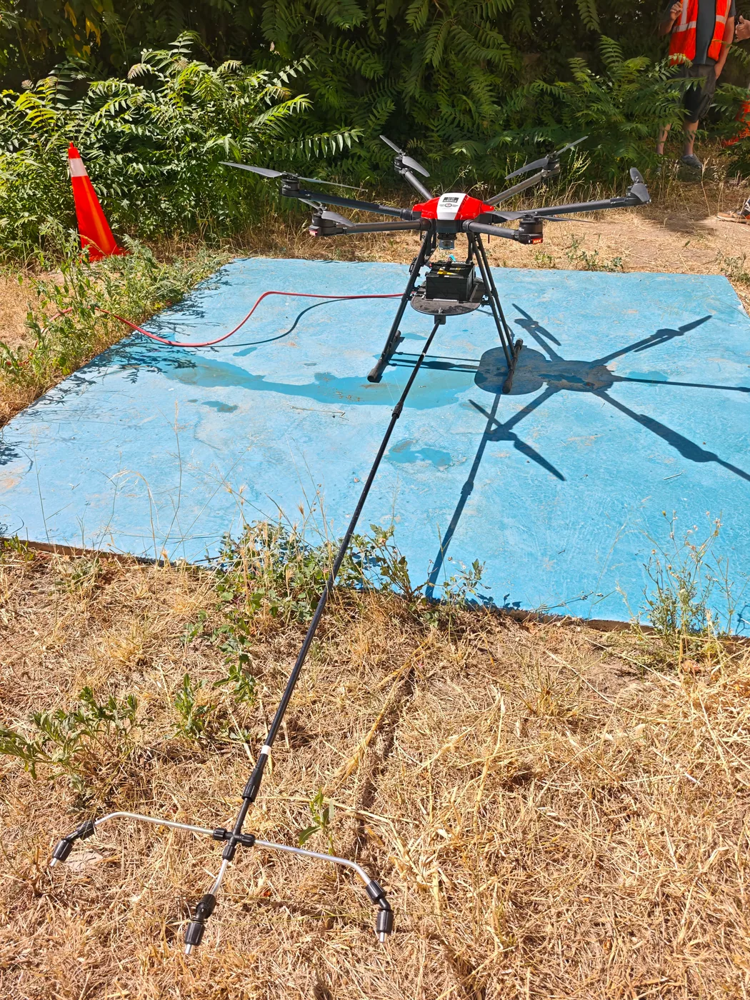

Pilote de drone certifié
Le télépilote d'AltiWash France est certifié pour l'exploitation professionnelle d'aéronefs sans équipage à bord.

AltiWash France intervient à Narbonne, dans toute l'Occitanie et partout en France pour le nettoyage technique par drone de panneaux photovoltaïques, toitures, façades, monuments et patrimoine.

Poussières, pollens, dépôts calcaires, salissures organiques : une installation photovoltaïque s'encrasse en continu. Sur les grandes toitures et les centrales au sol, l'entretien se heurte vite aux contraintes d'accès, à la fragilité des modules et à la sécurité des intervenants.
Le drone survole l'installation et traite les modules depuis les airs, sans circulation sur la couverture ni charge ponctuelle sur la structure. La pulvérisation est dosée et dirigée, module par module, rangée par rangée.
Exploitants · Industriels · Bailleurs · Collectivités
Une surface qui ne figure pas dans cette liste ? Décrivez-la nous : la faisabilité se juge au cas par cas.
Le drone ne remplace pas le savoir-faire : il déplace le point d'accès. L'opérateur reste au sol, la surface est traitée depuis les airs.

Aire de décollage · balisageIntervenir en hauteur au-dessus de bâtiments en exploitation impose un cadre précis. Voici le nôtre.
Le télépilote d'AltiWash France est certifié pour l'exploitation professionnelle d'aéronefs sans équipage à bord.
Qualification spécifique à la pulvérisation par drone, distincte du télépilotage courant et nécessaire à nos prestations.
Responsabilité civile professionnelle spécifique à l'activité de drone, couvrant nos interventions sur site.
Contrat souscrit auprès d'Air Courtage, courtier spécialisé dans l'assurance des aéronefs sans équipage à bord.
Attestations et justificatifs transmis sur demande, avant toute intervention.
Nature des surfaces, état d'encrassement, objectifs et contraintes d'exploitation du site.
Hauteurs, accès, environnement immédiat, faisabilité du vol et contraintes réglementaires.
Méthode retenue, moyens engagés, durée estimée et prix. Le devis est gratuit et sans engagement.
Créneau d'intervention, conditions météorologiques, coordination avec l'exploitation du site.
Balisage, briefing, vol de reconnaissance puis traitement de la surface, opérateur au sol.
Vérification du résultat, repli du matériel et restitution du site au client.
Aude · préparation d'intervention
Près de dix ans sur les chantiers, dans le montage de structures métalliques et la pose de panneaux photovoltaïques. Assez pour apprendre à lire un bâtiment, à s'adapter à ce qu'on trouve sur place — et pour ne plus se satisfaire du « on a toujours fait comme ça ».
AltiWash France est née de cet écart : une entreprise technique et ancrée dans le terrain, qui met la technologie au service de problématiques rencontrées chantier après chantier.
Gregory Wolff
Fondateur · Télépilote
Étudions ensemble la solution d'intervention la plus adaptée. Le devis est gratuit et sans engagement.
contact@altiwash.fr · Basés dans l'Aude, en Occitanie · Intervention partout en France